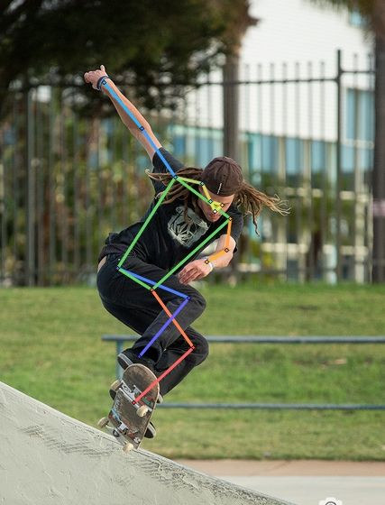
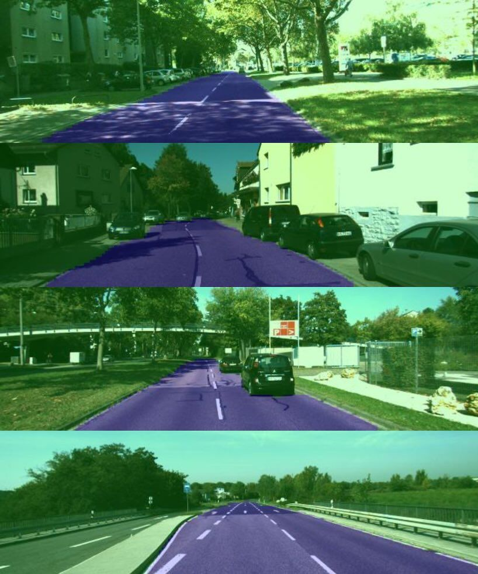
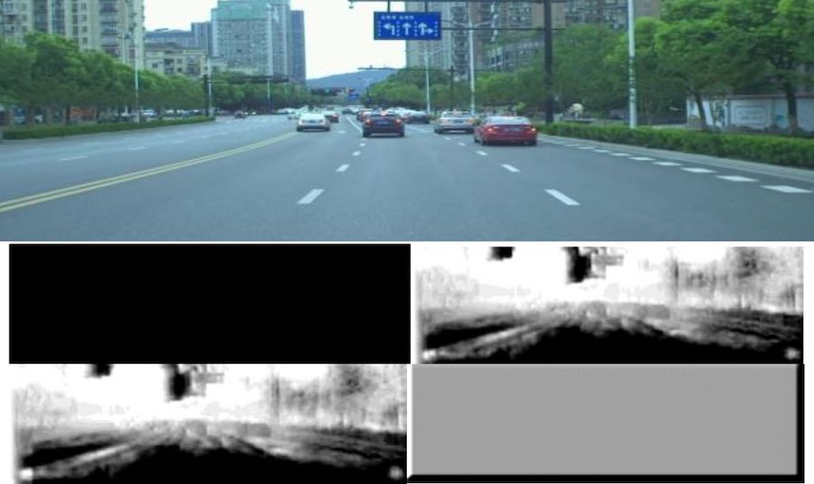
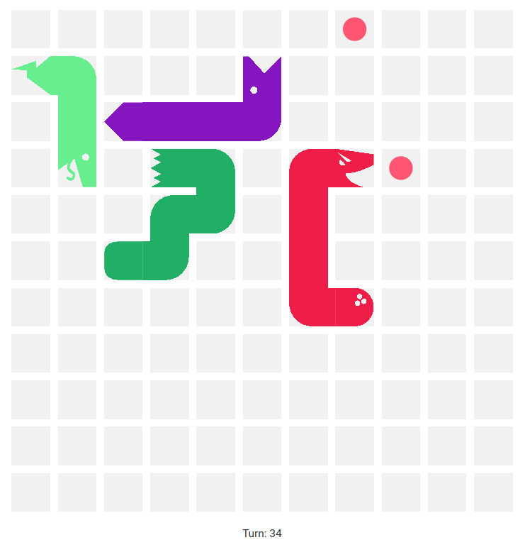

Hi, my name is Robert!
Introduction
Senior Software Engineer @ Microsoft working on vector search, agentic retrieval, search relevance, and RAG.
Hi, my name is Robert! I love software engineering, machine learning, and search. I graduated with a B.Eng in electrical and computer engineering with a 97% CGPA and 20+ academic awards valued at over $100,000. Complementing my technical skills are my exceptional academics and proven leadership skills.
I've spearheaded numerous initiatives, ranging from driving a 200+ person conference from a vision to reality, founding and growing the Senior's Program to over 180+ volunteers and 650+ workshop participants, and delivering technical talks to 250+ engineering students. I recently led a student group to develop and train a deep neural network for human pose estimation from random initialized weights. Check it out on Streamlit.
Please reach out if you'd like to connect!
Work Experience
Senior Software Engineer, Microsoft Azure AI Search
Mar. 2025 - Present | Redmond, WA
C++, C#, Java, Python | Vector Search, Agentic Retrieval, Information Retrieval, RAG, Distributed Systems
Working on vector search, agentic retrieval, multi-vector/multi-modal, and search relevance within Azure AI Search's team for vector storage and retrieval of vector embeddings. Common applications include Generative AI LLMs, Retrieval Augmented Generation and multi-modal/multi-lingual/semantic search applications.
Software Engineer II, Microsoft Azure AI Search
Jun. 2022 - Feb. 2025 | Redmond, WA
C++, C#, Java, Python | Vector Search, Vector Quantization, Information Retrieval, RAG, Distributed Systems
Working on vector search, vector quantization, and search relevance within Azure AI Search's team for vector storage and retrieval of vector embeddings. Projects on vector quantization and aggregations.
- Delivered 8-32x cost savings and up to 20x latency reduction for customers by implementing vector quantization techniques such as binary vectors, scalar and binary quantization, with SIMD acceleration.
- Improved relevance stack by defining and designing hybrid search subscores and score thresholding.
- Implemented new quota enforcement mechanism for HNSW indexes underlying physical resource utilization, leveraging data-driven decisions and cross-team design discussions, reducing limit overshoot by 100x.
- Successfully managed the end-to-end development of improved facet aggregations features from a spec doc; implemented a novel and highly extensible lexer-parser-evaluator which leveraged advanced mathematical concepts such as BNF grammar, shunting yard, and Reverse Polish Notation to parse, simplify, and validate the grammar string; added extensive AB test coverage.
- Proactively identified test coverage weaknesses and expanded vector search engine tests with a new test suite, which discovered one critical bug in a new quantization algorithm before release.
- Provided careful and thorough code reviews, offering detailed and constructive feedback by leveraging my technical expertise in distributed systems and vector algorithms to improve system reliability and performance. Key contributor on major features critical to the vector search product.
- As a subject matter expert, coordinated cross-collaborative investigations and root-caused several deeply technical production incidents effectively, ensuring customer services are quickly restored to health and the underlying defects are understood and repair items triaged.
Software Engineer, Microsoft Azure AI Search
Jul. 2021 - May 2022 | Redmond, WA
- Implemented the new alias feature to Public Preview.
- Modernized a key table in our telemetry database to be more performant and resilient while maintaining data integrity and zero downtime throughout the phased upgrade, resulting in a 50-100x speedup in runtime performance for queries using the table.
Projects

Human Pose Estimation using Deep Neural Networks
Jan. 2021 - May 2021
Project and Team Lead for a student team to develop a deep neural network for human pose estimation (HPE) on the COCO-2017 dataset.
I architected our cloud training pipeline, model architecture, and data augmentation method. I led work in model visualization and deployment.
Our model achieves very good performance on almost all images, provided the person is relatively centered and about 60-95% of the vertical image height (these are limitations we chose due to the tight time constraints of the project). It struggles in some extremely difficult images, typically with highly overlapped people or heavily occluded joints.
The model performs single-person single-image 2D HPE with a kinematic model and a heatmap-based approach for joint prediction rather than a regression on joint locations. The model was trained from scratch with random weight initializations, and our team developed much of the plumbing from scratch as well.

Semantic Road Segmentation using Convolutional Neural Networks
Jul. 2020 - Sep. 2020
- Successfully trained a U-Net CNN on the KITTI Road dataset using Keras, achieving up to 99.1% F1 score and 91% in the worst case.
- Designed and implemented the full training pipeline, including data generator, training/testing scripts, custom loss functions, and cloud training setup using Google Colab.
- Tuned hyperparameters and used data augmentation to improve model generalization under varied conditions.
- Researched and designed the network architecture by analyzing state-of-the-art computer vision literature.
- Resolved architectural and training bugs in the decoder and segmentation logic to ensure stable performance.
- Evaluated model using pixel-based metrics and addressed edge cases like shadows, occlusions, and road artifacts.

Computer Vision Project on Monocular Depth Estimation
Jan. 2020 - May 2020
- Implemented a limited version of Monodepth2, a self-supervised monocular depth estimation algorithm, in TensorFlow 1.13.1, replacing the original PyTorch implementation to improve project feasibility.
- Adapted the model to the DrivingStereo dataset, a large-scale dataset (~136k training image pairs), to enhance depth prediction generalization compared to the smaller KITTI dataset.
- Designed and trained a fully convolutional U-Net with a ResNet-18 encoder, optimized for stereo image inputs at 640×192 resolution.
- Integrated self-supervised learning using stereo photometric reconstruction and edge-aware smoothness loss without requiring ground truth depth data.
- Implemented multi-scale training loss, auto-masking for static pixels, and per-pixel minimum reprojection to improve depth estimation near occlusions and motion boundaries.

Battlesnake Reinforcement Learning AI Design
Jan. 2019 - May 2019
- Challenge: Classic snake game mechanics, but with up to 7 opponent snakes. Collisions with longer snakes or starvation result in death. Design algorithm to control snake in real-time game. Goal: Survive the longest.
- Trained keras-rl reinforcement learning model with a combination of self-play and publicly available snakes.
Contact Me
I'd love to connect, so please feel free to reach me on any of these platforms.
© Robert Lee | Made with ❤ with HTML, CSS, Javascript, & Bootstrap. Template from Rosacodes